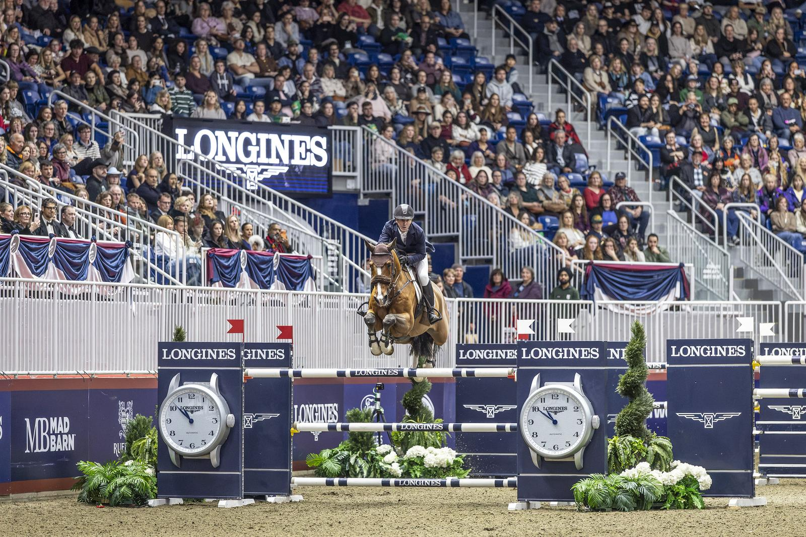

Guy Williams y Kazandor Hero Z ganan la prueba de 1,45 m del CSI4* de Valencia
El británico Guy Williams, con Kazandor Hero Z, se impuso en la prueba de 1,45 m del Big Tour del CSI4* del Moura Tours in Valencia - Autumn Tour.

La prueba del Big Tour disputada este jueves 20 de noviembre, con baremo A contra el cronómetro y un desempate, llevó el nombre de Cuerpo Consular de Valencia y se saldó con victoria británica. Guy Williams y Kazandor Hero Z cerraron sus dos recorridos sin penalizaciones y firmaron el mejor tiempo, 40,12 segundos, según la clasificación oficial.
La segunda plaza fue para Elia Simonetti (VEN) con Conchita PS, también con 0-0 puntos y un registro de 41,97 s. El neerlandés Kevin Jochems completó el podio con Ice d'Alba, igualmente sin faltas y con 42,15 s, apenas dieciocho centésimas por detrás del binomio venezolano.
Los tres primeros clasificados terminaron así con doble cero, y el orden lo decidió el cronómetro. Williams sacó 1,85 segundos a Simonetti, la diferencia más amplia entre los puestos de honor.
La prueba formó parte del CSI4* de la gira de otoño de Moura Tours in Valencia, que se celebra entre el 26 de octubre y el 22 de noviembre de 2026.
Todo sobre 2026 Moura Tours in Valencia - AUTUMN TOUR →
Por Lucía Valdeolmos